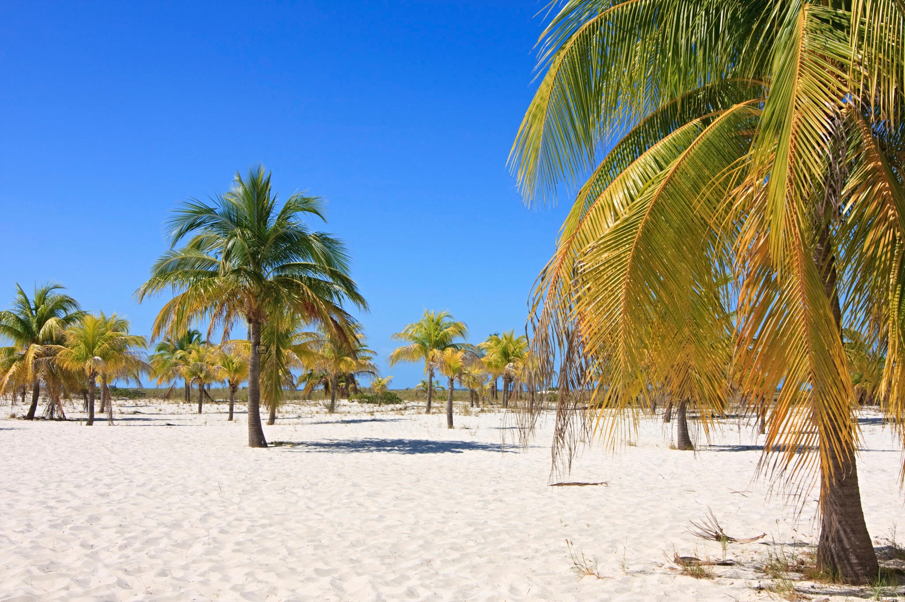
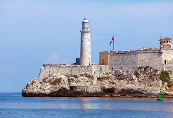
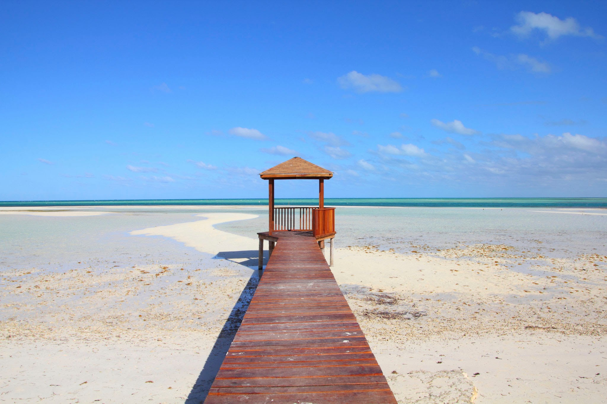
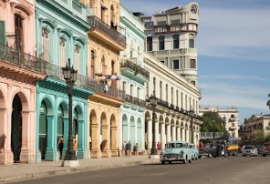
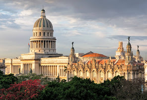
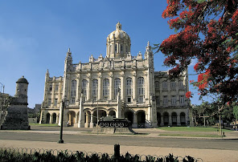

Cuba, officially the Republic of Cuba, is a country comprising the island of Cuba as well as Isla de la Juventud and several minor archipelagos. Cuba is located in the northern Caribbean where the Caribbean Sea, Gulf of Mexico and Atlantic Ocean meet.
What are you looking for?
Harbours, Coconuts and Beaches



Cayo Largo del Sur Morro Castle Jardines del Rey
Historical Sites and Ruins



Old Havana National Capitol building Revolution Museum
Tips of visiting Cuba
- Cuba has two official currencies, the Cuban Peso (CUP) and the Cuban Convertible Peso (CUC). Tourists use CUC and local people use CUP
- Casas particulares are a popular and highly authentic type of lodging to stay in during your Cuba trip.
- Paladares are private restaurants typically owned by families. Paladares are an excellent way to get authentic Cuban food at an affordable price.
- Cuba’s taxis are a convenient and authentic way to get around the cities. Plus, Cuba’s almendrones (private classic cars) are world-famous and totally unique to the island. Although it may be a little uncomfortable, sharing an urban taxi for short rides is a cheap and authentic way to experience Cuban.
- Review your travel insurance plan before taking the trip